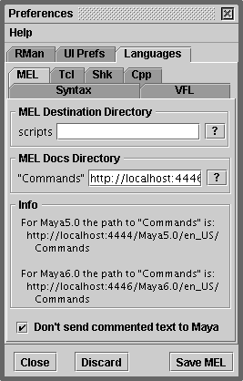

ONLINE DOCS
Double clicking on a MEL command, with the ALT key pressed, should result in
Cutter's Web Browser displaying the specific documentation for the command.
Alternatively, double click on a command and either "right-mouse-button" click
on the selected text (Windows) or "OPTION-click" the selection. Cutter will read
the Maya documentation and display a summary in a popup window.
SETTING THE PREFERENCES
For Maya 4.0 the (Windows) documentation is located at,
C:\AW\docs\en_US\html
For Maya 4.5 the documentation is located at,
C:\Program Files\AliasWavefront\docs\en_US\html
For Maya 5.0 the documentation is located at,
http://localhost:4444/Maya5.0/en_US/Commands
For Maya 6.0 the documentation is located at,
http://localhost:4446/Maya6.0/en_US/Commands
To point Cutter at the correct directory select the Preferences menu item from the
"Edit" menu on the main menu bar. Choose the "Languages" tab and ".mel" from the
popup menu. The button marked "?" will display a file dialog that will enable you
locate the "commands" directory.
Click on the "Save Languages" button before closing the Preferences dialog.

Alternatively, double click on the "Commands" text field and a "line editor"
window will open. This will enable you to edit the path directly.